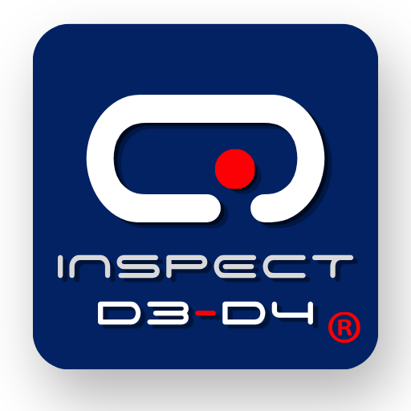

Q-Inspect
Inspección de calidad en línea de producción
Versión — · más reciente
Solo disponible en Android
Al terminar, abre el archivo desde la notificación de descarga para instalarlo.
Estás abriendo esta página desde un equipo que no es Android. Q-Inspect solo se instala en tablets Android. Abre esta misma dirección desde el navegador de la tablet para descargarla e instalarla directo.
Instalar la app
Preguntas frecuentes, en el orden en que las vas a necesitar.
1¿Cómo descargo Q-Inspect en la tablet?
Abre esta página en el navegador de la tablet (Chrome o Samsung Internet) y toca Descargar Q-Inspect. Espera a que el botón muestre la palomita verde; el archivo queda en la carpeta Descargas.
2La tablet no me deja instalar el archivo. ¿Qué hago?
Android bloquea por seguridad las apps que no vienen de la tienda. Da permiso solo al navegador con el que descargaste:
- Al abrir el APK, Android muestra un aviso. Toca Ajustes.
- Activa Permitir desde esta fuente.
- Regresa y toca Instalar.
3Aparece un aviso de Play Protect. ¿Es seguro?
Sí. Play Protect avisa porque Q-Inspect se distribuye directo por D3-D4 Solutions y no por Google Play. Toca Más detalles › Instalar de todos modos. Descarga la app únicamente desde esta página.
4¿Qué permisos pide la app?
La cámara, para escanear el QR de vinculación y los gafetes de los inspectores. Toca Permitir la primera vez que la app lo pida; sin cámara no se puede vincular la tablet ni entrar con gafete.
5Ya tengo Q-Inspect instalada. ¿Cómo la actualizo?
Descarga la versión más reciente desde esta página e instálala encima, sin desinstalar la anterior. Así la tablet conserva su vinculación y no hay que volver a escanear el QR. Antes de actualizar, pide al inspector que termine su jornada.
6¿Funciona en iPhone, iPad o computadora?
No. Q-Inspect solo está disponible para Android, y se recomienda la Samsung Galaxy Tab A11. El panel web de supervisión sí se abre desde cualquier computadora en q-inspect.tech.
Vincular la tablet
Se hace una sola vez por tablet. Necesitas a alguien con acceso al panel: Supervisor, Calidad o SuperAdmin.
Paso 1 · Panel
Genera el QR
En la computadora entra a Planta › Tablets y toca Vincular en la tablet que vas a usar.
Paso 2 · Tablet
Abre Q-Inspect
La primera vez la app abre sola la pantalla Vincular tablet con la cámara encendida.
Paso 3 · Escanear
Apunta al QR
Escanea el QR de la pantalla del panel. Es de un solo uso y vence en 15 minutos.
Paso 4 · Listo
Confirma los datos
La tablet muestra su nombre, área y planta (por ejemplo TAB-L1-01 · Línea 1) y pasa a la pantalla de PIN.
Al reiniciar la app ya no pide QR: la vinculación queda guardada en la tablet.
?Dice «El código venció o ya se usó»
Pasaron más de 15 minutos o el QR ya se usó en otra tablet. En el panel toca Generar otro y escanea el nuevo.
?Quiero mover la tablet a otra área o planta
La app no tiene botón para desvincular. Hazlo así:
- Verifica que la tablet no tenga una jornada abierta.
- En el panel, desactiva la tablet en Planta › Tablets.
- En la tablet: Ajustes › Aplicaciones › Q-Inspect › Almacenamiento › Borrar datos.
- Vuelve a vincular con un QR nuevo de la tablet en su nueva área.
?La tablet regresó sola a «Vincular tablet»
La tablet se desactivó en el panel, así que perdió su acceso. Pide al Supervisor que la reactive o genere un QR nuevo y vuelve a escanear.